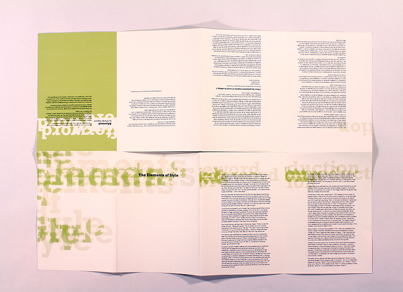
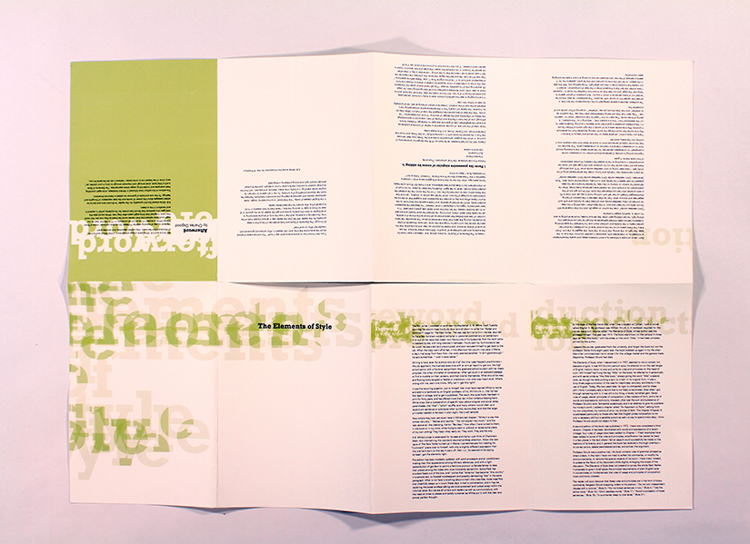
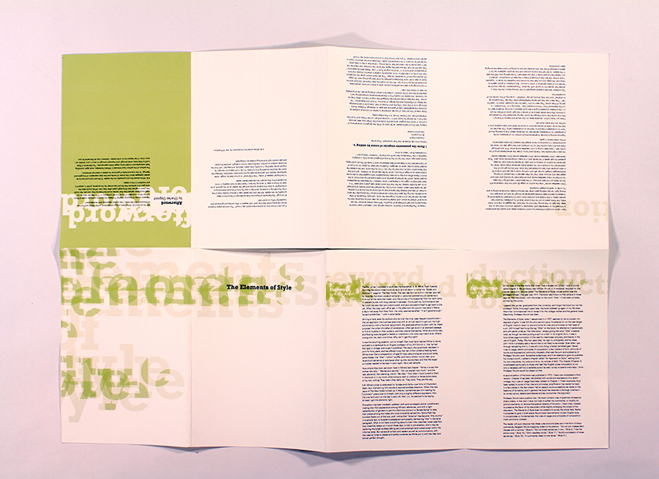
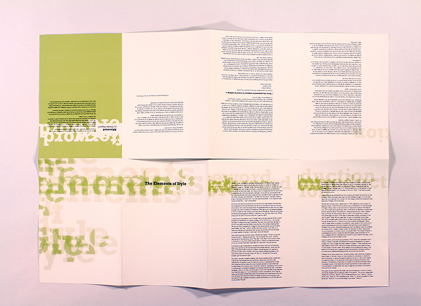

The author to the book the elements of style had a militaristic nature to him and his teaching style. I used influences from basic military manuals to influence the design and make of the book redesign. I used elements such as paper stock, thin booklet format, colors, and the worn and torn nature the manuals. The front and back matter are separated out into a booklet fold with opens up into the table of contents to add in the resemblance of reading a large map.